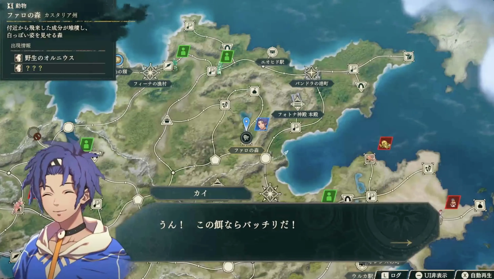
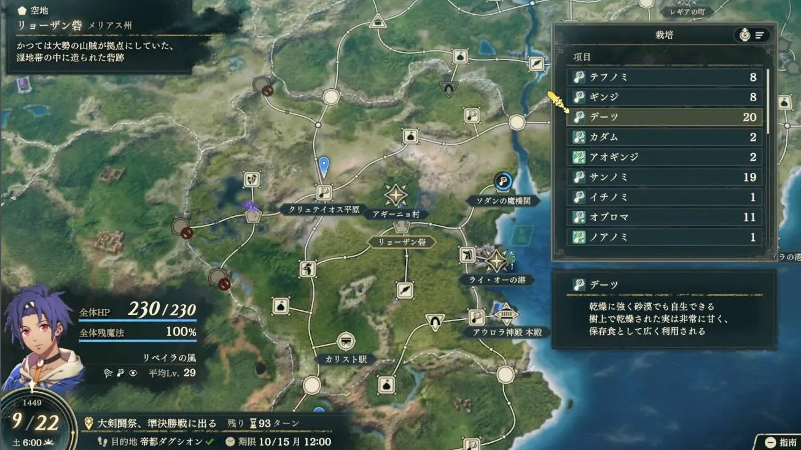

捕获坐骑，亲手养出一支机动队

查看大图 ↗先找到动物，再准备它喜欢的饲料
在世界地图找到动物图标，进入地点后选择引诱，放入符合喜好的饲料；经过几个自由行动回合，再回来尝试捕获。放好饲料并不代表一定成功。
捕到后去鞑古席翁的厩舍管理、喂食。提高友好等级可以取得骑乘技能；高友好坐骑也有培养收益。动物要配给能骑乘的兵种，才能发挥作用。
先看动物菜单的食材与口味偏好，不要把马喜欢的蔬菜直接喂给所有种类。
日文版游戏画面 · Game8 来源 ↗
查看大图 ↗在常走的路上，留一块补给田
找地图上的白色五边形空地，选择栽培，使用手里已有的植物开始种植。经过回合成熟后，路过就能收获。
肥料可提高稀有收获的机会；一块田收获若干次后会恢复为空地，需要重新种。用常用饲料作物起步，顺路收成，比来回赶路更省行动。
日文版游戏画面 · Game8 来源 ↗- 捕获动物地点 · 喜好饲料
- 照料帝都厩舍 · 提高友好
- 补给空地栽培 · 顺路收获
凯伊冲锋，彼得远射，蒂亚拉守住回复
剧情与教学队友单独列出。箭头是培养方向，不要求练满每个职业；仍须满足进度、技能与考试条件。
 乌尔坦德伴随前排的回复
乌尔坦德伴随前排的回复
凯伊
机动输出／魔力型 Blaze Arts机动性与范围能力兼具，是本线主要投资对象。
培养重点
本线先承担前排与收尾，给 蒂亚拉留治疗位置。培养剑术并兼顾魔力，不要把 Blaze Arts 当纯物理伤害。 想走机动路线，可在开放后使用飞鸵系兵种；先保证当前武器熟练度，再补后期考试需求。
蒂亚拉留治疗位置。培养剑术并兼顾魔力，不要把 Blaze Arts 当纯物理伤害。 想走机动路线，可在开放后使用飞鸵系兵种；先保证当前武器熟练度，再补后期考试需求。
留意 神鸵兵还需完成“来自父亲的秘密委托”等解锁条件；不要只按技能等级提前规划。先把已开放的骑乘兵种和坐骑养好。
第三部再规划的转职
候选：高阶墓志铭（暂译）；来源另推荐神鸵兵作为过渡方向。 后期方案需马术 D、黑魔术 D、剑术 B；高阶墓志铭（暂译）另需第三部第 2 区分起的神殿相关委托解锁。
蒂亚拉
主力治疗／远程救援远程回复的价值不依赖击杀数量，值得优先练白魔术。
培养重点
凯伊线开局优先保证治疗。白魔术向 C 推进，争取远程回复魔法。 牧师 → 主教方向维持治疗能力；站位应让前排在治疗范围内、自己在敌射程外。
留意 远程回复先看白魔术技能与射程；不要因为能治到队友，就让自己站进敌人攻击范围。
第三部再规划的转职
候选：贤者。 白魔术 A；终盘兵种不能当作第一部开局即可使用。

彼得
远程弓手／安全削血弓战技的射程优势提供安全输出，和凯伊的前排职责互补。
培养重点
优先弓术，利用弓战技射程 +1，从敌人不能反击的位置输出。 弓箭手 → 狙击手方向；按实际命中和攻速挑弓，稳定收尾比冒险贴脸更重要。
留意 射程加成针对弓战技，不是所有普通攻击。
第三部再规划的转职
长期候选：宗师射手。 弓术 A；该目标属于第三部最上级职。

古扎岚
较易取得的剑系输出教学加入的剑系队友，可以分担凯伊的近战压力；先观察两人的输出，再决定给谁更多击杀。
培养重点
先剑术与命中，剑客到侍道持续补物理输出。已有多名剑手时选一位主练，把其他击杀留给弓手或法师。
留意 概率触发的个人技能只算额外收益，不能作为存活或击杀的必需条件。
第三部再规划的转职
候选：刀剑将领。 剑术 A，且需第三部战神的委托解锁。
先养眼前的主力，再为下一个缺口招人
本篇资源优先给谁
先把击杀和武器训练分给凯伊、彼得；蒂亚拉优先白魔术，古扎岚负责补剑系输出。名声4的 诺克裘拉可补格斗，名声5的
诺克裘拉可补格斗，名声5的 马吉迪与
马吉迪与 米迦艾拉选一位补斧手。
米迦艾拉选一位补斧手。 杨界虽只需名声3，但已有蒂亚拉时，治疗位并不一定还缺人。
杨界虽只需名声3，但已有蒂亚拉时，治疗位并不一定还缺人。
更早决定兵种与技能
想长期培养的人，出现且条件达标后即可安排入队。实际入队等级越低，后续能由你选择兵种的升级次数通常越多。
门槛、时点、交涉要一起看
低名声不保证低等级，也不保证前几章就能遇见。金字塔列的是门槛，人物卡还会单列出现时间与附加条件。
把捕获的等待回合与采集、送礼一起安排。想培养骑兵，先照料实际要用的坐骑；别把饲料分散给所有动物。
按名声找人，按队伍缺口做选择
先看全线分层，再读名声3—6的培养卡。教学加入的同伴在上方介绍，不重复放入金字塔。
本线招募金字塔
每层列出从这一名声门槛开始可考虑的人物。升到更高名声后，低门槛人物仍可招募；还要满足支援、出现时间及交涉要求。
名声 3
1 位名声 4
1 位名声 5
3 位名声 6
5 位
名声 7
5 位


名声 8
9 位


名声 9
6 位


名声 10
6 位


层级宽度只区分名声门槛，不表示战力或人数。★ 是本站按加入成本、培养时间及队伍缺口给出的建议，点击人物查看理由和完整条件。
名声 3—5 · 先准备这些人
杨界
低成本治疗名声 3 · 支援 2
依次选“奶酪”→“满月”→任意选项。
名声3就能着手招募，适合需要第二位治疗者的队伍；已有蒂亚拉时按回复压力决定。
培养重点
白魔术优先，向 C+ 的牧师目标训练；把他放在能覆盖前排、又不直接接敌的位置。
留意 招募要完成三道问答。回复位先保白魔术与安全站位，不必与输出争击杀。
第三部再规划的转职
第三部：贤者，白魔术 A。
诺克裘拉
低支援成本的格斗手名声 4 · 支援 1
已核对来源未列额外交涉物品；达到条件后对话确认。
支援只要 1，力量、速度和守备较均衡。想补近战格斗时，比再培养一名剑手更有分工。
培养重点
格斗术优先，向 C 的斗拳手目标练；上级勇士阶段兼顾力量。
留意 战后回避加成不等于稳定免伤；不要把格斗手当成重装使用。已有足够近战时，可把训练留给远程与回复。
第三部再规划的转职
第三部可考虑武僧；解锁委托与考试资格到对应阶段再核对。
马吉迪
斧系近战输出名声 5 · 支援 2
三次都选“需要”。
持斧加力量，适合补凯伊队伍的正面物理伤害。
培养重点
集中斧术与可靠命中，斗士、土匪到勇士逐步提高物理输出。
留意 与米迦艾拉职责接近，先挑一位培养；高等级技能会降低回避，不宜据此安排承伤。
第三部再规划的转职
第三部可考虑战斗将领；先满足解锁与考试要求，不提前分散第一部训练。
米迦艾拉
斧系近战名声 5 · 支援 3
支付3000G。
邻接作战有命中加成，适合补一位近战斧手。已有足够物理输出时，可以少占些训练资源。
培养重点
先练斧术，向中级所需的斧术 C 推进；用命中稳定的武器和战技，再逐步换重斧。
留意 与已有斧手职责接近，先看伤害与命中缺口再投入；本线交涉按3000G准备。
第三部再规划的转职
第三部：战斗将领，依剑、斧、格斗术 A 的考试方案选择。

哈尔温
高速弓骑／机动收尾名声 5 · 支援 3
交椰枣 ×10。
用机动补彼得的固定射击位；椰枣可准备，但是否投入还要看力量与队伍缺口。
培养重点
先保证弓的命中和威力；需要补力量可走斗士、土匪，再转森林骑士。转骑兵时补马术。
留意 名声要求低不保证立即出现；力量偏低时，追击两次也未必能击杀。
第三部再规划的转职
第三部可考虑弓骑士；先满足解锁与考试要求，不提前分散第一部训练。
名声 6 · 看缺口再投入

努蒂奴
能穿过敌阵的机动位名声 6 · 支援 1
交青铜斧 ×2。
骑乘时可以穿过敌人所在格，适合绕到侧翼或接近目标；是否招募，先看已有骑兵能否完成这些任务。
培养重点
斧术和马术为主；土匪阶段偏重物理输出，再按考试要求补骑兵技能。想留魔法骑兵方向，后续兼修黑魔术。
留意 穿越能力要求骑兵，且自身不能是大型单位；土匪过渡期不享受这一骑乘能力。
第三部再规划的转职
第三部可再规划魔法骑兵；本篇先保证斧术、马术，避免过早同时练太多方向。

妮涅
抗魔前排／枪系输出名声 6 · 支援 3
交光辉鱼 ×1。
先完成鱼类交付再入队。培养枪术，利用对魔法兵种的个人能力安排对位。
培养重点
先完成鱼类交付再入队。培养枪术，利用对魔法兵种的个人能力安排对位。 卫士方向可兼顾前排职责；仍要核算实际魔法伤害。
留意 对魔法的命中／回避优势并非免伤。Lv.35 周边支援效果不要提前计入。
第三部再规划的转职
候选：圣枪师。 枪术 A；按阶段开放进行考试。

哪吒
剑系输出／快速收尾名声 6 · 支援 3
交砂虫肉 ×3。
适合想添剑手的队伍；若本线剑手已齐，名声6并不意味着必须招。
培养重点
先剑术与命中，再沿剑客、侍道培养。投入前对比现有剑手的攻速与伤害。
留意 交砂虫肉3个；近战位较多时，应优先补治疗或远程而非再堆同类输出。
第三部再规划的转职
第三部可考虑刀剑将领；剑术A，并完成对应神殿解锁委托。
本线完整招募条件 · 36 位，按名声升序 ＋
S＝支援，R＝名声。不含上方剧情与教学同伴；未展开的交涉条件不表示没有要求。
第10—11章 · 4篇外传日历
只列本篇能接的外传，按首次开放日期排列。日期均为游戏内1449年；接取窗口结束后，即使完成期限未到，也可能接不到任务。
每篇基本奖励均含 20,000G ＋ 名声150，另有下列道具。完成外传只满足部分招募条件，不会自动招来相关人物。第三部的条件加入另行标注。
短窗口提醒 · 奥尔赫尔外传 10月18—19日可接，别把10月21日的完成期限当成接取期限。
亲善比赛

可接取9/17—9/25
完成期限来源未单列
去哪里接 帝都 · 大斗技场前
关系到 佩佩，以及
佩佩，以及 迪托利希篇
迪托利希篇 盖茨的招募；盖茨还要等待贝特朗队败退。第三部第一区分的贝特朗加入也要求完成此外传。
盖茨的招募；盖茨还要等待贝特朗队败退。第三部第一区分的贝特朗加入也要求完成此外传。
接取提醒与资料来源
向大斗技场前的贝特朗接取。
来源未单列完成期限的条目，不推定它等于接取末日。接到后查看游戏任务栏，并尽早完成。
窗口按腾讯共创表核对；完成期限由单篇攻略补充。标题为本站中文整理，便于识别任务人物。
消失的马车

可接取9/17—9/22
完成期限10/12
可接取10/1—10/10
完成期限10/12
去哪里接 帝都 · 港口
关系到 乌修拉的招募；交涉仍有选项要求。第三部第一区分的塔利穆恩加入也要求完成此外传。
乌修拉的招募；交涉仍有选项要求。第三部第一区分的塔利穆恩加入也要求完成此外传。
打法、接取提醒与资料来源
向港口的塔利穆恩接取；两段日期是同一外传的两个接取窗口，不用重复完成。
- 携带货物的盗贼到达撤离目标点就会失败。优先封住逃跑路线；货物被拿走不等于立即失败，击败持有者后仍可取回。
- 胜利条件是回收全部货物，或击败全部敌人。守住退路后，再按战况选择回收或歼敌，不必为了捡货物贸然拆散防线。
- 盗贼与鸟类敌人会互相攻击，可以利用双方交战造成的削血；出战前准备弓或对飞行有效的战技，仍以阻止盗贼逃脱为优先。
窗口按腾讯共创表核对；完成期限由单篇攻略补充。标题为本站中文整理，便于识别任务人物。
金黄色的秘密

可接取9/24—10/5
完成期限来源未单列
去哪里接 帝都 · 达古扎神殿前

打法、接取提醒与资料来源
向神殿前的安娜接取。
- 客串单位索雷尔（ソレル）牵制巨人，其余人清理沿途敌人并拆矿，不把全队挤在巨人面前。
- 地图共10堆矿，每破坏5堆会触发一次对巨人的大额伤害，最多两次。优先安排机动单位拆矿；安娜的「重突進」可以边移动边破坏。
来源未单列完成期限的条目，不推定它等于接取末日。接到后查看游戏任务栏，并尽早完成。
窗口按腾讯共创表核对；完成期限由单篇攻略补充。标题为本站中文整理，便于识别任务人物。
未了的心愿
可接取10/18—10/19
完成期限10/21
去哪里接 帝都 · 克蕾尔神殿分殿前
关系到 迪雅各的招募，以及第三部第二区分奥尔赫尔的加入。凯伊篇只有两天可以接取。
迪雅各的招募，以及第三部第二区分奥尔赫尔的加入。凯伊篇只有两天可以接取。
接取提醒与资料来源
向神殿分殿前的奥尔赫尔接取；接下后及时出城完成。
窗口按腾讯共创表核对；完成期限由单篇攻略补充。标题为本站中文整理，便于识别任务人物。
错过时可考虑在方尖塔之间重玩对应章节；重玩仍有流程成本，建议提前留档。查看路线与进度说明 →
凯伊篇的兵种选择
人物卡里的兵种名称现在可以点击。查看备考技能、特殊解锁与精通，再决定要不要绕路练。
先养坐骑队，再补远射
把指导解锁变成选择
卡司托尔、奥罗拉、贝特朗的指导分别关联特殊职业。先看现有角色的技能底子，再决定追哪项解锁。
这些是本线选职建议，不是固定转职链。最上级、神将放到第三部规划；在其他路线解锁过的资格，也要以当前存档考试列表为准。
兵种资料库 · 按阶段与职能查找 →